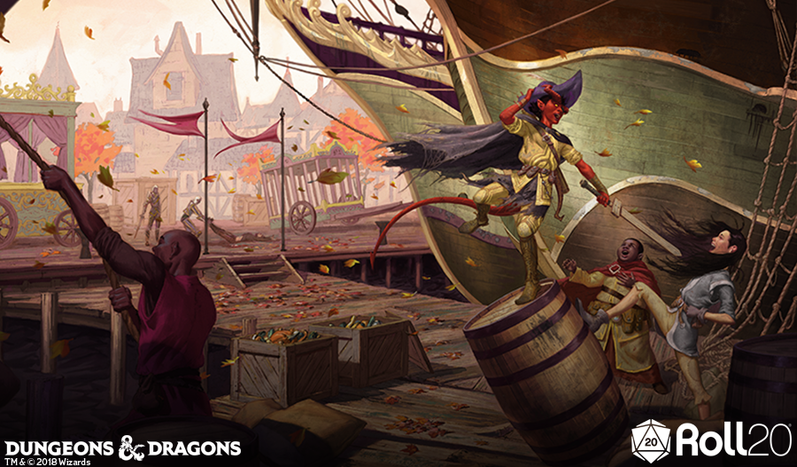
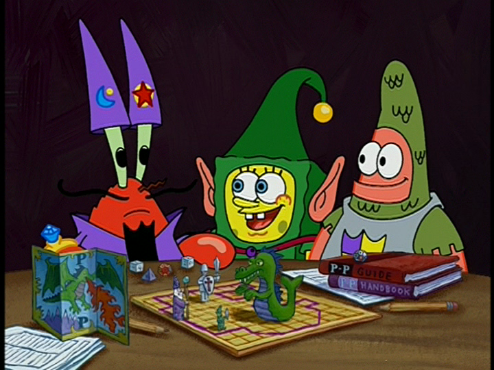

Chapter Two: Trollskull Alley
Quests
Unlicensed Enchantment (Short mission)
Talking Doll (Creepy Event)
Expanded Faction Quests
Blue Alley PDF
Expanded Faction Mission for Emerald Enclave Scarecrow Hunt
The Riddle Murderer
Putting Lif the Poltergeist to Rest (a Checklist)
Expanding Haunting of Trollskull Manor
Gray Hands PDF
Bonus Zhentarim Faction Mission: The Grayfangs
Maps
Trollskull Manor Maps-Dirty
Trollskull Manor and Tavern
Maps
Trollskull Manor redone
Props/Flavor/Enhancement
Introducing Guilds
Filling Trollskull Manor
Making Paper Birds
Orgin of Trollskull Alley Name
Drinks Menu
Trollskull Manor Deed Handout
Trollskull Alley Shopkeeper Art
Visitors to Trollskull Alley
Trollskull Manor Room Descriptions
Flavor-Text Describing Trollskull Manor
Valeur RPG Guide to Chapter 2 PDF
Encounter Edits
End of Chapter Two: Trollskull Alley